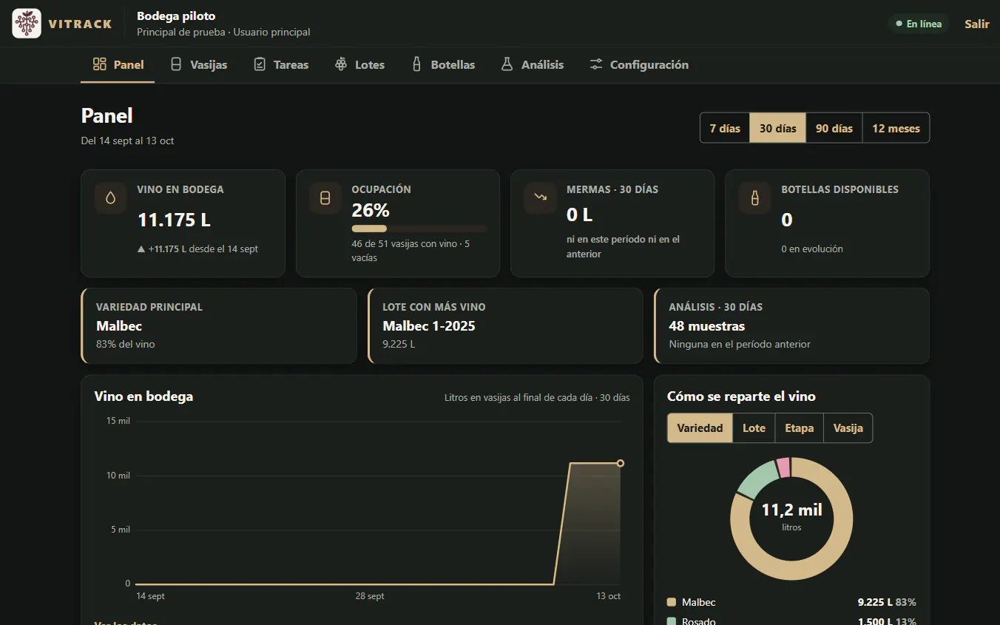
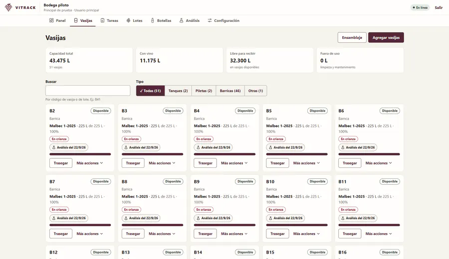
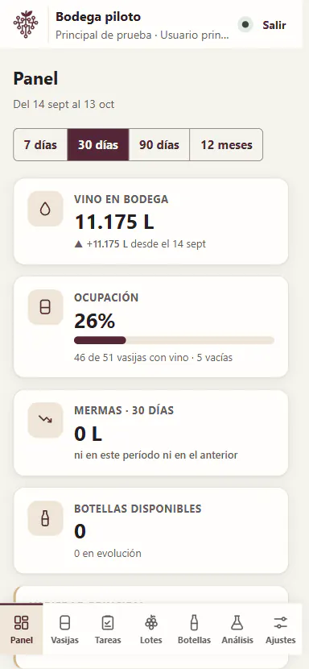

Gestión para bodegas · App web instalable · 2026
En piloto con una bodegaVITRACK: saber siempre cuánto vino y cuántas botellas hay en la bodega
Un sistema de gestión para bodegas chicas y medianas: vasijas, lotes, trasiegos, ensamblajes, análisis de laboratorio y botellas. Es una app web instalable que funciona en la computadora y en el celular, también sin señal.
- Mi parte
- Producto, diseño de la interfaz, desarrollo asistido por IA y tests
- Stack
- React, Vite y PWA · Fastify · PostgreSQL · Vitest
- Fecha
- Octubre de 2026
- Estado
- En piloto con una bodega. Ingreso por Google, solo para personas invitadas

El problema
En una bodega el vino se mueve todo el tiempo: pasa de un tanque a una barrica, se mezcla con otros lotes, pierde volumen en cada trasiego y termina en botellas. Si el registro vive en una planilla, cuesta saber cuánto vino hay en cada vasija y de qué lote es, y un error de tipeo no le avisa a nadie.
El enólogo con el que trabajé lo dijo en un audio: más que la parte comercial, lo importante es «saber cuántas botellas tenemos siempre».
Lo que hice
- Armé la especificación y la validé con el enólogo: las etapas del vino, cómo se nombran los lotes, qué se registra en la molienda y qué no hace falta. Cada respuesta quedó como una decisión numerada; hoy son más de setenta.
- Diseñé para dos lugares de uso: la computadora de la oficina y el celular dentro de la bodega. En el teléfono la navegación va abajo, los diálogos se abren como hoja inferior con el botón principal siempre visible y las tablas se convierten en tarjetas.
- Desarrollé la app web instalable, la API y la base de datos, y la publiqué en Vercel con la base en São Paulo.


Las decisiones que sostienen todo
- Volúmenes exactos. Se guardan en mililitros enteros y nunca se redondean. En pantalla se ven en litros o en hectolitros, según prefiera cada bodega, sin tocar los datos.
- Un libro de doble partida. Cada operación que mueve vino genera asientos que suman cero, y lo mismo las botellas en su propio libro. «Control del libro» verifica que los saldos coincidan y que lo fraccionado sea igual a las botellas.
- La base de datos como red de seguridad. Además de las validaciones de la API, PostgreSQL impide dos lotes en una vasija, superar la capacidad, saldos negativos, operaciones desbalanceadas o leer datos de otra bodega.
- Cada operación se aplica una sola vez. Lleva un identificador generado en el dispositivo: si la conexión se corta y se reintenta, no se duplica.
- Sin conexión, solo lo seguro. Se consulta lo último sincronizado y se cargan análisis; todo lo que mueve vino o botellas pide conexión, para que dos personas no descuenten el mismo stock.
Calidad y accesibilidad
- WCAG 2.2 AA validado con axe-core en todas las pantallas, en modo claro y oscuro, a 320, 375 y 1280 px de ancho. Sin scroll horizontal desde 320 px y objetivos táctiles de 44 px o más.
- Pruebas de dominio, de integración contra PostgreSQL y de propiedades: secuencias aleatorias que verifican el aislamiento entre bodegas, la idempotencia, la concurrencia y que el libro siempre balancee.
- Copias de seguridad cifradas, simulacro de restauración en la integración continua y un control diario de los libros.
Estado
El piloto ya empezó: una bodega usa VITRACK en paralelo con su planilla durante dos a cuatro semanas, hasta que toda diferencia entre lo físico y lo digital quede explicada. Ingresan con Google y solo las personas que invita el usuario principal de la bodega.